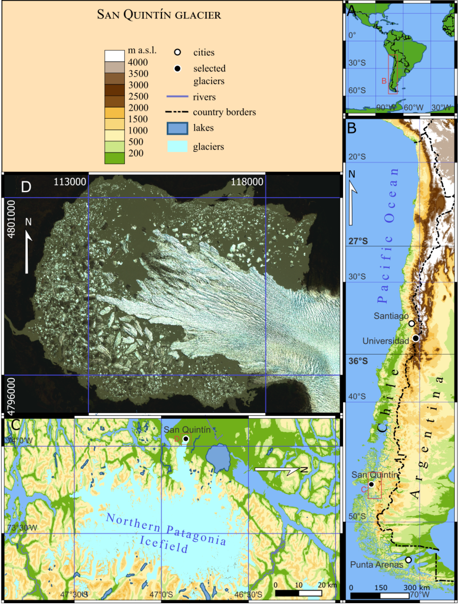
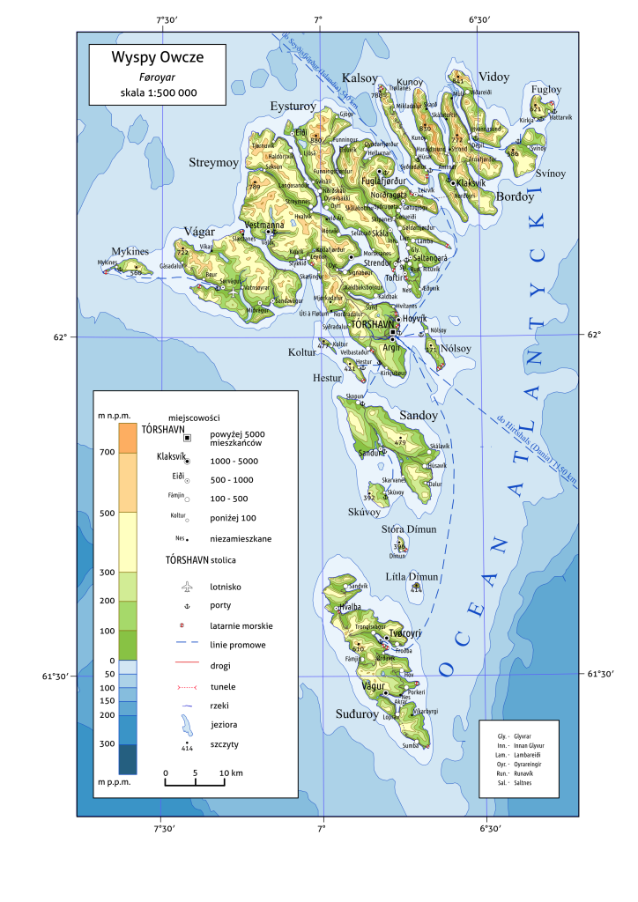

<?xml version="1.0" encoding="UTF-8"?><rss version="2.0"
	xmlns:content="http://purl.org/rss/1.0/modules/content/"
	xmlns:wfw="http://wellformedweb.org/CommentAPI/"
	xmlns:dc="http://purl.org/dc/elements/1.1/"
	xmlns:atom="http://www.w3.org/2005/Atom"
	xmlns:sy="http://purl.org/rss/1.0/modules/syndication/"
	xmlns:slash="http://purl.org/rss/1.0/modules/slash/"
	>

<channel>
	<title>Cartography &#8211; Julian Podgórski</title>
	<atom:link href="" rel="self" type="application/rss+xml" />
	<link>../../../../mojastrona/index.html</link>
	<description>researcher i like remote work also maps</description>
	<lastBuildDate>Sat, 13 Apr 2024 10:26:30 +0000</lastBuildDate>
	<language>en-US</language>
	<sy:updatePeriod>
	hourly	</sy:updatePeriod>
	<sy:updateFrequency>
	1	</sy:updateFrequency>
	<generator>https://wordpress.org/?v=6.5.2</generator>
	<item>
		<title>Universidad glacier overview map</title>
		<link>../../../universidad-glacier-overview-map/index.html</link>
		
		<dc:creator><![CDATA[jpodgo]]></dc:creator>
		<pubDate>Thu, 11 Apr 2024 11:03:56 +0000</pubDate>
				<category><![CDATA[All]]></category>
		<category><![CDATA[Cartography]]></category>
		<guid isPermaLink="false">../../../index.html?p=37</guid>

					<description><![CDATA[The map shows location of Universidad glacier within Central Chile (Dry Andes) and location of Dry Andes within Chile, alongside a plot of positive degree days and annual precipitation sum in the 21st century. Map created for my doctoral dissertation.<div class="read-more-wrapper"><a class="read-more" href="../../../universidad-glacier-overview-map/index.html" title="Read More"> <span class="button ">Read More</span></a></div>]]></description>
										<content:encoded><![CDATA[
<p><a href="../../../wp-admin/edit.php?post_type=post"></a></p>


<p>The map shows location of Universidad glacier within Central Chile (Dry Andes) and location of Dry Andes within Chile, alongside a plot of positive degree days and annual precipitation sum in the 21st century. Map created for my doctoral dissertation. </p>


]]></content:encoded>
					
		
		
			</item>
		<item>
		<title>San Quintin glacier overview map</title>
		<link>../../../san-quintin-glacier-overview-map/index.html</link>
		
		<dc:creator><![CDATA[jpodgo]]></dc:creator>
		<pubDate>Thu, 11 Apr 2024 11:03:43 +0000</pubDate>
				<category><![CDATA[All]]></category>
		<category><![CDATA[Cartography]]></category>
		<guid isPermaLink="false">../../../index.html?p=41</guid>

					<description><![CDATA[The map shows location of San Quintin glacier within Southern Chile (North Patagonian Icefield) and location of the North Patagonian Icefield within Chile. Map created for my doctoral dissertation.<div class="read-more-wrapper"><a class="read-more" href="../../../san-quintin-glacier-overview-map/index.html" title="Read More"> <span class="button ">Read More</span></a></div>]]></description>
										<content:encoded><![CDATA[
<p>The map shows location of San Quintin glacier within Southern Chile (North Patagonian Icefield) and location of the North Patagonian Icefield within Chile. Map created for my doctoral dissertation.</p>


<figure class="wp-block-image size-large"></figure>
]]></content:encoded>
					
		
		
			</item>
		<item>
		<title>All settlements on Faroe Islands</title>
		<link>../../../all-settlements-on-faroe-islands/index.html</link>
		
		<dc:creator><![CDATA[jpodgo]]></dc:creator>
		<pubDate>Thu, 11 Apr 2024 11:02:58 +0000</pubDate>
				<category><![CDATA[All]]></category>
		<category><![CDATA[Cartography]]></category>
		<guid isPermaLink="false">../../../index.html?p=53</guid>

					<description><![CDATA[A map created as a final project for a cartography course during Master studies in GIS and remote sensing.<div class="read-more-wrapper"><a class="read-more" href="../../../all-settlements-on-faroe-islands/index.html" title="Read More"> <span class="button ">Read More</span></a></div>]]></description>
										<content:encoded><![CDATA[
<p>A map created as a final project for a cartography course during Master studies in GIS and remote sensing.</p>


<figure class="wp-block-image size-large"></figure>
]]></content:encoded>
					
		
		
			</item>
	</channel>
</rss>
